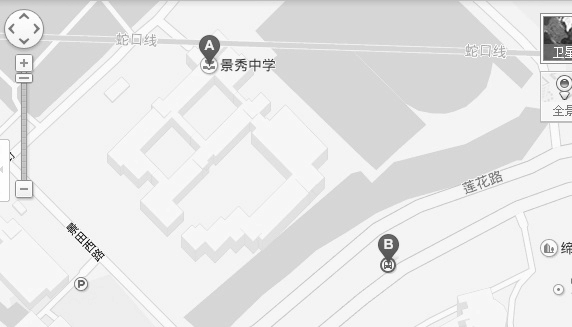
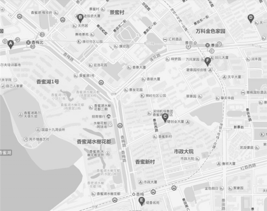

我们在前面已经提到了Java中String的对象池，下面就来学习这种共享的技术。对象池维护一个装载空闲对象的池子，如果需要对象的时候，不是直接new，而是转从对象池里获取。如果对象池里没有空闲对象，则创建一个新的对象，当获取出的对象完成它的职责之后， 再进入池子等待被下次获取。
对象池的原理很好理解，比如我们组人手一本《JavaScript权威指南》，从节约的角度来讲，这并不是很划算，因为大部分时间这些书都被闲置在各自的书架上，所以我们一开始就只买一本，或者一起建立一个小型图书馆（对象池），需要看书的时候就从图书馆里借，看完了之后再把书还回图书馆。如果同时有三个人要看这本书，而现在图书馆里只有两本，那我们再马上去书店买一本放入图书馆。
对象池技术的应用非常广泛，HTTP连接池和数据库连接池都是其代表应用。在Web前端开发中，对象池使用最多的场景大概就是跟DOM有关的操作。很多空间和时间都消耗在了DOM节点上，如何避免频繁地创建和删除DOM节点就成了一个有意义的话题。
假设我们在开发一个地图应用， 地图上经常会出现一些标志地名的小气泡，我们叫它toolTip。如图12-2所示。

图 12-2
在搜索我家附近地图的时候，页面里出现了2个小气泡。当我再搜索附近的兰州拉面馆时，页面中出现了6个小气泡。按照对象池的思想，在第二次搜索开始之前，并不会把第一次创建的2个小气泡删除掉，而是把它们放进对象池。这样在第二次的搜索结果页面里，我们只需要再创建4个小气泡而不是6个，如图12-3所示。

图 12-3
先定义一个获取小气泡节点的工厂，作为对象池的数组成为私有属性被包含在工厂闭包里，这个工厂有两个暴露对外的方法，create表示获取一个div节点，recover表示回收一个div节点：
var toolTipFactory = (function(){
var toolTipPool = []; // toolTip对象池
return {
create: function(){
if ( toolTipPool.length === 0 ){ // 如果对象池为空
var div = document.createElement( 'div' ); // 创建一个dom
document.body.appendChild( div );
return div;
}else{ // 如果对象池里不为空
return toolTipPool.shift(); // 则从对象池中取出一个dom
}
},
recover: function( tooltipDom ){
return toolTipPool.push( tooltipDom ); // 对象池回收dom
}
}
})();
现在把时钟拨回进行第一次搜索的时刻，目前需要创建2个小气泡节点，为了方便回收，用一个数组ary来记录它们：
var ary = [];
for ( var i = 0, str; str = [ 'A', 'B' ][ i++ ]; ){
var toolTip = toolTipFactory.create();
toolTip.innerHTML = str;
ary.push( toolTip );
};
如果你愿意稍稍测试一下，可以看到页面中出现了innerHTML分别为A和B的两个div节点。
接下来假设地图需要开始重新绘制，在此之前要把这两个节点回收进对象池：
for ( var i = 0, toolTip; toolTip = ary[ i++ ]; ){
toolTipFactory.recover( toolTip );
};
再创建6个小气泡：
for ( var i = 0, str; str = [ 'A', 'B', 'C', 'D', 'E', 'F' ][ i++ ]; ){
var toolTip = toolTipFactory.create();
toolTip.innerHTML = str;
};
现在再测试一番，页面中出现了内容分别为A、B、C、D、E、F的6个节点，上一次创建好的节点被共享给了下一次操作。对象池跟享元模式的思想有点相似，虽然innerHTML的值A、B、C、D等也可以看成节点的外部状态，但在这里我们并没有主动分离内部状态和外部状态的过程。
我们还可以在对象池工厂里，把创建对象的具体过程封装起来，实现一个通用的对象池：
var objectPoolFactory = function( createObjFn ){
var objectPool = [];
return {
create: function(){
var obj = objectPool.length === 0 ?
createObjFn.apply( this, arguments ) : objectPool.shift();
return obj;
},
recover: function( obj ){
objectPool.push( obj );
}
}
};
现在利用objectPoolFactory来创建一个装载一些iframe的对象池：
var iframeFactory = objectPoolFactory( function(){
var iframe = document.createElement( 'iframe' );
document.body.appendChild( iframe );
iframe.onload = function(){
iframe.onload = null; // 防止iframe重复加载的bug
iframeFactory.recover( iframe ); // iframe加载完成之后回收节点
}
return iframe;
});
var iframe1 = iframeFactory.create();
iframe1.src = 'http:// baidu.com';
var iframe2 = iframeFactory.create();
iframe2.src = 'http:// QQ.com';
setTimeout(function(){
var iframe3 = iframeFactory.create();
iframe3.src = 'http:// 163.com';
}, 3000 );
对象池是另外一种性能优化方案，它跟享元模式有一些相似之处，但没有分离内部状态和外部状态这个过程。本章用享元模式完成了一个文件上传的程序，其实也可以用对象池+事件委托来代替实现。